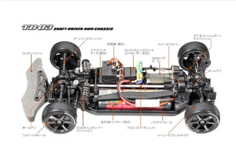

タミヤ TB-03

引用元画像：タミヤ公式サイト
📋 基本情報
| メーカー | タミヤ（Tamiya） |
|---|---|
| 機種名 | TB-03 |
| 型番 | 58437（VDS ドリフトスペック）など |
| 発売時期 | 2007年11月 |
| 生産状況 | 生産終了 |
| カテゴリー | ラジコンカー（1/10スケール 電動RCカー） |
| サブカテゴリー | シャフトドライブ4WDツーリングカー |
📏 シャーシスペック
| 全長 | 約410mm |
|---|---|
| 全幅 | 約190mm |
| ホイールベース | 257mm / 260mm（調整可能） |
| トレッド | フロント・リヤともに調整可能 |
| タイヤ径 | 26mm径オンロードタイヤ装着 |
| フレーム | バスタブタイプシャーシ |
⚙️ 駆動系
| 駆動方式 | シャフトドライブ4WD |
|---|---|
| デフギヤ | 前後ともボールデフ標準装備 |
| ギヤ比 | 調整可能（スパーギヤ・ピニオンギヤ交換により） |
| モーター | 540タイプ |
| ユニバーサルシャフト | CVA仕様 |
🔧 サスペンション
| 形式 | 4輪ダブルウィッシュボーン独立懸架 |
|---|---|
| ダンパー | CVAオイルダンパー（フリクションダンパー） |
| ステアリング | 3分割タイロッド式 |
| 調整機能 | キャンバー角、トー角、車高調整可能 |
💡 特徴
オンロード入門に最適
- 組み立てやすいシャフトドライブ4WD
- メンテナンス性に優れたバスタブシャーシ
- 初心者から中級者まで楽しめる
高いセッティング自由度
- ホイールベース調整可能（257mm / 260mm）
- トレッド調整可能
- キャンバー角・トー角・車高の細かな調整が可能
ボールデフ標準装備
- 前後ともボールデフを標準装備
- スムーズな駆動力配分
- ドリフト走行にも対応
拡張性の高さ
- 豊富なオプションパーツ
- ドリフト仕様にも転用可能
- グリップ走行からドリフトまで幅広く対応
🔧 ぽすとそに工房での修理実績
修理難易度
★★★☆☆（取り扱い経験者なら★★☆☆☆、初めての場合は中級レベル）
よくある故障・注意点
- ボールデフのメンテナンスが定期的に必要
- CVAユニバーサルシャフトのピンの摩耗に注意
- ダンパーオイル漏れ（Oリングの劣化）
- ギヤの摩耗（特にスパーギヤ）
修理のポイント
- ボールデフの調整は慣れが必要（締め付けトルク管理）
- CVAシャフトのピンは消耗品として定期交換推奨
- ダンパーのOリングは定期的にグリスアップ
- バスタブシャーシのため分解・組み立ては比較的容易
その他の特徴
- 2007年発売の比較的古いモデルのため、補修部品の入手が難しい場合あり
- ドリフト仕様への転用例が多い
- オンロード入門者に人気だったモデル
- TB-04、TB-05 PROなど後継機種が発売されている